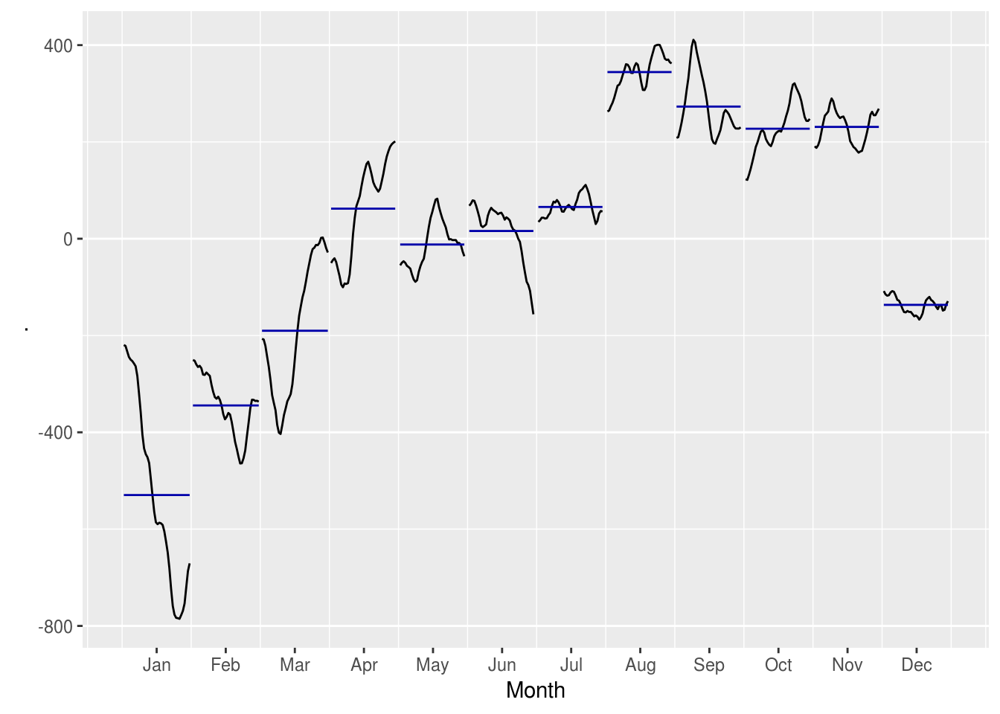

Capítulo 4 Decomposição de Séries Temporais
# install.packages("seasonal")
library(BETS)
library(forecast)
library(lubridate)
library(tidyverse)
library(magrittr)
library(seasonal)Séries Temporais podem exibir uma grande variedade de padrões que podem ser modelados separadamentes, o que pode ajudar o analista a entender melhor os dados e até mesmo a melhorar as previsões.
Já vimos no capítulo introdutório que uma série temporal possui três tipos de padrão: tendência, sazonalidade e ciclo. Se assumirmos que a série segue um modelo aditivo, então, matematicamente, ela pode ser descrita pela equação \(y_t = S_t + T_t + E_t\), onde \(E_t\) é o componente do erro no período \(t\). Se a série for melhor descrita por um modelo multiplicativo, então a equação vira \(y_t = S_t \times T_t \times E_t\).
Para se decidir se uma série segue um modelo aditivo ou multiplicativo (alguns algoritmos já calculam isso internamente), observe se a magnitude dos períodos sazonais ou a variância da tendência cresce conforme o nível (valores absolutos) da série cresce.
Por exemplo:
No segundo gráfico, vemos que, para valores maiores da série temporal, a variância dos dados é maior.
4.1 Médias móveis
Embora seja meio datada e tenha dado espaço para técnicas mais avançadas de decomposição, a média móvel é a base de muitos métodos de análises de séries temporais e uma importante etapa para estimar o componente de tendência de uma série.
Vamos voltar a analisar a série temporal baixada por meio do BETS:
energia <- readRDS("data/ts_energia.Rda")
# plotando a serie contra uma media movel de 3 meses
plot(energia)
ma(energia, 3) %>% lines(col = "red", lwd = 1)
# a media movel de 3 meses nao foi suficiente. vamos aumentar o periodo
ma(energia, 12) %>% lines(col = "blue", lwd = 2)
ma(energia, 24) %>% lines(col = "green", lwd = 3)A curva que apresenta menos flutuações sazonais é verde, referente à média móvel de 24 períodos. Mesmo assim, pode-se dizer que essa decomposição não foi satisfatória, devido a curva apresentar perturbações mesmo usando um período longo (24 meses) para sua estimação.
4.2 Pacote seasonal
O pacote seasonal, disponível no CRAN, implementa uma interface ao algoritmo e software X-13-ARIMA-SEATS, desenvolvido pelo US Census Bureau. Possui recursos como seleção automática do modelo ARIMA, detecção de outliers e suporte para feriados definidos pelo usuário, como Carnaval e Páscoa.
Um rápido uso do pacote seasonal é mostrado abaixo:
m <- seas(energia)
# resumo sobre o modelo
summary(m)##
## Call:
## seas(x = energia)
##
## Coefficients:
## Estimate Std. Error z value Pr(>|z|)
## Leap Year 58.60609 56.18712 1.043 0.296924
## Mon -25.25882 17.47502 -1.445 0.148339
## Tue -18.16659 17.46348 -1.040 0.298218
## Wed -54.46067 17.45878 -3.119 0.001812 **
## Thu 92.24828 17.46016 5.283 0.00000012684 ***
## Fri -37.13352 17.62849 -2.106 0.035165 *
## Sat 11.39096 17.48081 0.652 0.514642
## Easter[15] -129.88101 37.31801 -3.480 0.000501 ***
## AO1990.May -930.64663 163.15515 -5.704 0.00000001170 ***
## LS2001.Jul -1706.97822 195.90208 -8.713 < 0.0000000000000002 ***
## LS2003.Dec 883.03805 196.12478 4.502 0.00000671810 ***
## AO2008.Dec 1004.92270 203.79179 4.931 0.00000081758 ***
## LS2008.Dec -2099.78174 245.37722 -8.557 < 0.0000000000000002 ***
## MA-Nonseasonal-01 0.27018 0.04459 6.059 0.00000000137 ***
## MA-Seasonal-12 0.77013 0.03122 24.672 < 0.0000000000000002 ***
## ---
## Signif. codes: 0 '***' 0.001 '**' 0.01 '*' 0.05 '.' 0.1 ' ' 1
##
## SEATS adj. ARIMA: (0 1 1)(0 1 1) Obs.: 471 Transform: none
## AICc: 6264, BIC: 6329 QS (no seasonality in final):1.115
## Box-Ljung (no autocorr.): 34.74 . Shapiro (normality): 0.9928 *
## Messages generated by X-13:
## Notes:
## - Unable to test AO2008.Dec due to regression matrix
## singularity.# plotando o modelo
autoplot(m)# retornando as componentes individuais da serie:
# seasonal(m)
# trendcycle(m)
# remainder(m)
# seasadj(m)A função forecast::ggsubseriesplot() pode ser utilizada para avaliar como o componente sazonal variou com o passar do tempo:
m %>%
# extrair componente sazonal
seasonal() %>%
# plotar grafico sazonal
ggsubseriesplot()
4.3 Mensurando a força dos componentes
https://otexts.com/fpp2/seasonal-strength.html
r_t <- remainder(m)
t_t <- trendcycle(m)
s_t <- seasonal(m)
measure <- function(R, c){
x1 <- 0
x2 <- 1 - var(R)/var(R + c)
max(x1, x2)
}
measure(r_t, s_t)## [1] 0.8596937